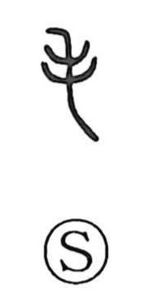

毛

Uncategorized
Kun: ke | On: mou
hair ・ fur ・ wool
Explanation
This character is a pictograph of strands of hair hanging down, and its core sense is hair—by extension, fur and wool. From that image grew a broader, allegorical usage: just as hair covers the body, vegetation covers the earth, so grasses on land or in water could be called “hair.” Thus in the Zuozhuan, “jian, xi, zhao, zhi zhi mao” refers to the “hair” of streams and pools—water plants such as duckweed—which were gathered and offered to the gods. The word could even stand for “animals” in contexts where creatures were identified by their pelts, as in mōbutsu. Conversely, fumō, “barren,” evokes land stripped of its hair-like covering, too impoverished for grain, trees, or other plants to grow.